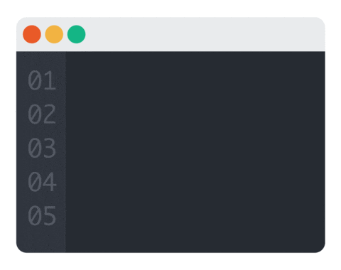

The Farmer Was Replaced
Jogo super interativo e complexo desenvolvido para aprender linguagem python
🌐 Linguagem Python
🏷️ Pago
📂 Não Open Source
🏷️ Pago
📂 Não Open Source
Bem vindo ao Infohub, o seu portal de conhecimento sobre ferramentas, jogos, e plataformas para te ajudarem na sua jornada aprendedo programação!
Se for um iniciante, experimente o botão abaixo e explore o nosso guia para a sua jornada de aprendizado!
Comece a sua jornada de programação!
Jogo super interativo e complexo desenvolvido para aprender linguagem python
O infohub se trata de uma biblioteca virtual que tem o intuito de coletar e tornar acessivel e de simples acesso o conhecimento sobre ferramentas de aprendizado de programação para estudantes da informática.
O infohub surgiu como uma resposta a falta de uma compilação clara e objetiva de conhecimentos sobre o ensino pedagógico dinâmico da programação.
Embora existam diversas plataformas, jogos e utensilios uteis no aprendizado da programação e do campo da informática. Não existem portais dedicados a sua exploração e suas informações estão dissolvidas pela internet em sites de pouca confiabilidade.
O infohub tem como intuito prover uma solução para isso, proporcionando assim um canal onde você pode encontrar meios, links e explicações sobre ferramentas para o aprendizado da programação, suas mecânicas, e seus locais de encontro.
Dentro do Infohub, você pode encontrar Guias, Materiais e explicações didáticas sobre ferramentas uteis no desenvolvimento da programação.
Possuimos sessões dedicadas a abordar o tipo de linguagem ensinada por cada ferramenta e suas utilidade. Um guia de quais ferramentas um iniciante pode utilizar para melhorar o seu aprendizado. E páginas dedicadas completamente a dissertar sobre essas ferramentas, ensinando assim o seu básico e potencial pedagógico.
